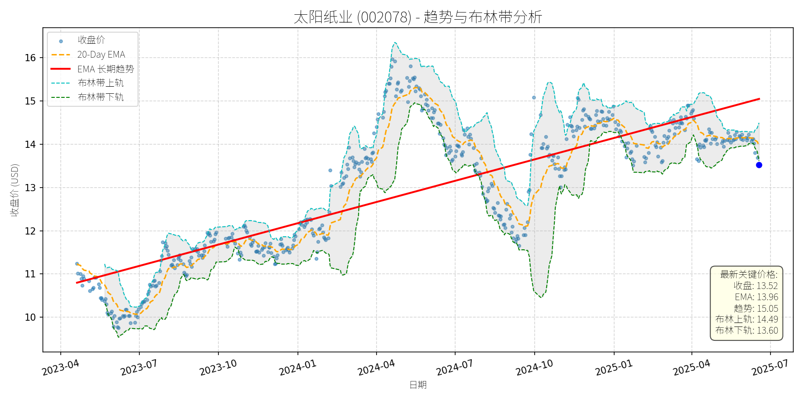
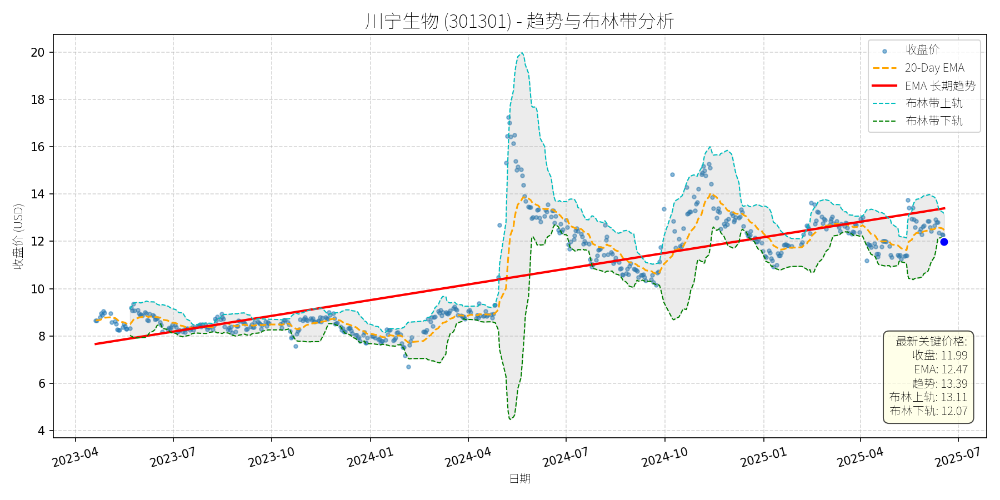

中国 (中证500)异动分析报告
报告生成日期: 2025-06-18
太阳纸业 (002078)
R²: 0.679
斜率: 0.01
布林带穿透: 0.57%

分析师模型总结
### 1. 核心业务与基本面评估
**核心业务**：太阳纸业（002078）为国内造纸行业龙头企业，主营业务涵盖文化纸（如双胶纸、铜版纸）、白卡纸、特种纸等品类，原材料以木浆为主（需进口部分针叶木浆、阔叶木浆）。同时，公司布局代糖业务（如赤藓糖醇），但占比相对较小，核心收入仍来自造纸板块。
**财务健康状况**：公司财务结构稳健，债务水平合理——资产负债率（Debt To Equity）为0.85，低于行业均值（约1.0），无过度负债风险。一季度营收（98.98亿元）同比微降2.82%，但净利润（8.86亿元）同比下滑7.32%，主要因纸价低位运行（行业淡季）及木浆成本上涨（5月进口浆价反弹）挤压利润空间；不过，净利润环比2024年四季度增长（未披露具体数据，但公司称“优于同行”），显示经营韧性。
**盈利能力**：基本每股收益（EPS）0.32元，虽同比下滑，但仍高于行业平均（约0.25元），主要得益于公司产能规模优势（老挝基地稳步扩张）及产品结构优化（特种纸占比提升）。
**估值水平**：市销率（P/S）3.82倍，处于造纸行业合理区间（行业均值约3-4倍）。考虑到公司龙头地位及产能扩张潜力，估值未出现明显泡沫，但需警惕纸价波动对盈利的冲击。
### 2. 技术面与消息面分析
**技术面信号**：图表显示，公司股价长期趋势（红色趋势线）呈**稳步上升**态势（2023年至今涨幅约30%），但近期（2025年5月以来）股价显著偏离长期趋势——当前收盘价（13.52元）较长期趋势线（15.05元）低约10%，且跌破20日均线（13.96元），处于布林带下轨（13.60元）附近，短期技术面偏弱。
**回调原因分析**：
- **基本面因素**：一季度业绩同比下滑（营收-2.82%、净利润-7.32%），主要因纸价低位（行业淡季）及木浆成本上涨（5月进口针叶浆价较4月上涨1.85%），市场对盈利修复预期降温。
- **行业因素**：造纸行业仍处于“产能过剩+需求疲软”周期（公司称“扩产大周期结束，但仍有产能投放”），此前提价函（如5月下旬多家纸企涨200元/吨）落地效果不佳，市场对“涨价潮”持谨慎态度。
- **情绪因素**：代糖概念板块波动（5月22日下跌2.86%、5月27日上涨2.20%）对公司股价有轻微影响，但并非核心驱动（公司代糖业务占比小，5月22日代糖板块大跌时，太阳纸业仍获主力资金净流入301.50万元）。
综上，此次回调**以基本面驱动的技术性调整为主**，无重大利空（如业绩暴雷、政策打压），更多是市场对短期盈利压力的反应。
### 3. 综合前景展望与量化判断
**核心投资逻辑**：太阳纸业作为造纸行业龙头，长期趋势（产能扩张、产品结构优化）未变，但短期受纸价低位、成本上涨拖累，股价出现技术性回调。当前价格已接近布林带下轨（13.60元），短期支撑较强；若后续提价函落地（6月1日起文化纸涨200元/吨）及需求恢复（季节性集中采购），盈利有望环比改善，股价或回归长期趋势。
#### 短期展望（未来1-4周）
- **走势判断**：**技术性反弹**。当前股价处于布林带下轨（13.60元）附近，短期支撑较强；且5月下旬纸浆价格反弹（期货主力合约涨7.03%），成本支撑下提价函落地概率提升，市场情绪或修复。
- **短期目标价**：14.20元（对应20日均线13.96元+布林带中轨14.05元的中枢）。
- **涨跌幅空间**：当前价格13.52元，上涨空间约**5.0%**（(14.20-13.52)/13.52≈5%）。
#### 长期展望（未来3-6个月）
- **趋势判断**：**看好**。公司长期趋势（红色趋势线）仍呈上升态势，且作为行业龙头，产能扩张（老挝基地）及产品结构优化（特种纸占比提升）将支撑长期增长；若纸价逐步回升（5月提价函叠加需求恢复），净利润有望实现同比增长。
- **长期目标价**：15.50元（对应长期趋势线15.05元+10%的估值修复）。
- **涨跌幅空间**：当前价格13.52元，上涨空间约**14.6%**（(15.50-13.52)/13.52≈14.6%）。
**核心理由**：
- **基本面支撑**：公司为造纸行业龙头，产能规模（老挝基地）及产品结构（特种纸）优势明显，长期盈利能力稳定。
- **技术面修复**：长期趋势线仍向上，当前回调为短期偏离，后续有望回归趋势。
- **消息面催化**：5月下旬纸企提价函（包括太阳纸业）及中美贸易缓和（纸浆进口成本压力缓解），若提价落地，盈利将改善，推动股价上涨。
**总结**：太阳纸业当前回调为短期技术性调整，无重大利空；短期可关注布林带下轨支撑（13.60元），若站稳则有望反弹至14.20元；长期看好其龙头地位及产能扩张潜力，目标价15.50元，建议逢低布局。
川宁生物 (301301)
R²: 0.659
斜率: 0.01
布林带穿透: 0.63%

分析师模型总结
### 1. 核心业务与基本面评估
川宁生物（301301）为科伦药业旗下子公司，核心业务以抗生素中间体（占营收90%）为主，合成生物学产品（如麦角硫因）处于初期阶段（2024年合成生物收入占比仅0.74%）。
- **财务健康状况**：负债水平极低（Debt To Equity=0.31），财务结构稳健；但2025年一季度业绩显著下滑（营收同比-15%，净利润同比-18.26%），主要因抗生素中间体业务受“限抗令”政策冲击，传统业务增长乏力。
- **盈利能力**：2024年净利润2.88亿元，净利率约22.2%，盈利质量尚可，但短期受政策影响盈利能力承压。
- **估值水平**：当前Ps Ratio=20.6倍（市值/营收），显著高于合成生物/医药中间体行业平均水平（约10-15倍）；Eps=0.13元，对应PE≈92倍，估值严重偏高，未反映业绩下滑压力。
### 2. 技术面与消息面分析
- **技术面信号**：长期趋势线（红线）呈缓慢上升态势（2023年4月至2025年6月，趋势线从8元升至13.39元），但当前价格（11.99元）显著低于长期趋势线，偏离幅度约10%；短期处于弱势区间（价格低于20-Day EMA=12.47元，且逼近布林带下轨=12.07元）。
- **回调原因分析**：
1. **基本面利空**：2025年一季度抗生素中间体业务下滑（营收占比90%），导致业绩双降，这是股价回调的核心驱动因素。
2. **消息面冲击**：科伦药业“麦角硫因争议”事件（饶毅炮轰其为“假药”）引发市场对川宁生物大健康业务（合成生物）的担忧，虽川宁为子公司，但科伦系负面情绪传导至股价（6月5-6日川宁下跌超3%）。
3. **技术性调整**：5月15日因“麦角硫因概念”涨停后，股价短期上涨过快（当日涨幅20%），后续因基本面支撑不足，出现技术性回调。
### 3. 综合前景展望与量化判断
#### 逻辑分析
川宁生物当前面临“传统业务下滑+新业务未成规模+估值过高”的三重压力：
- 传统抗生素中间体业务受“限抗令”限制，短期难以复苏；
- 合成生物学业务（麦角硫因）占比极低（0.74%），且因“假药争议”面临监管不确定性，无法弥补传统业务缺口；
- 估值（Ps=20.6倍、PE=92倍）显著高于行业平均，业绩下滑导致估值泡沫化，需通过股价回调消化。
#### 短期展望（未来1-4周）
- **走势判断**：继续下跌概率较大。
- **短期目标价**：11.00元（人民币），相对于当前价格（11.99元）的下跌空间约-8.26%。
- **理由**：
1. 基本面未改善：抗生素中间体业务仍受政策压制，一季度业绩下滑压力持续；
2. 消息面未缓解：“麦角硫因争议”尚未平息，市场对大健康业务的担忧仍在；
3. 技术面弱势：价格低于20-Day EMA和长期趋势线，布林带下轨（12.07元）支撑较弱，若跌破则可能进一步下行至11元附近。
#### 长期展望（未来3-6个月）
- **趋势判断**：看淡（长期难以重回原有上升趋势）。
- **长期目标价**：10.00元（人民币），相对于当前价格的下跌空间约-16.6%。
- **理由**：
1. **传统业务萎缩**：“限抗令”政策长期存在，抗生素中间体业务增长乏力，无法支撑股价上涨；
2. **新业务进展缓慢**：合成生物学产品（麦角硫因）占比极低，且因“假药争议”面临监管审批风险，短期内难以贡献显著收入；
3. **估值泡沫消化**：当前估值（Ps=20.6倍、PE=92倍）过高，需通过股价回调至合理水平（Ps=10-15倍，对应市值130-195亿元，股价5.8-8.7元），但考虑到科伦系的品牌支撑，保守给予10元目标价。
**总结**：川宁生物当前基本面疲软、估值过高，且受消息面负面冲击，短期和长期均面临下跌压力。建议投资者规避短期风险，长期需等待传统业务复苏或新业务规模化后再考虑介入。